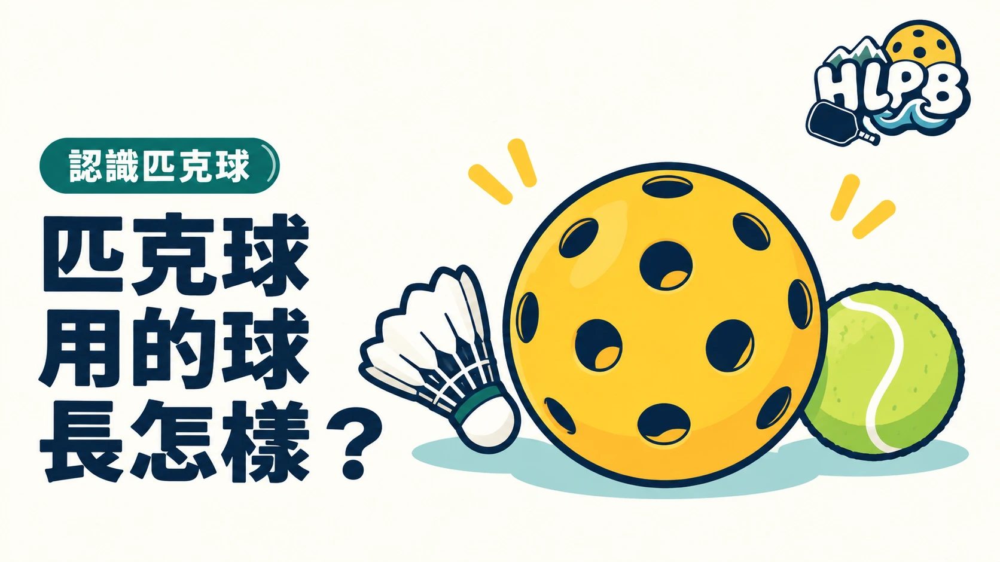

匹克球用的是有孔塑膠球，搭配實心球拍。孔洞是球體設計的一部分，不是把一般網球打洞就能代替。
先認識球的差異
| 看哪裡 | 對選球有什麼幫助 |
|---|---|
| 完整型號 | 同品牌也可能有不同用途，不能只看顏色 |
| 室內或戶外定位 | 確認產品預定使用的環境 |
| 球體與孔洞 | 理解不同設計，不能只憑孔數斷定是否適用 |
| 主辦指定球款 | 參賽時先查公告，避免買錯用途 |
室內與戶外球常有不同的孔洞和硬度設計，但不是所有球都只有兩種固定規格。也有兼用球款。第一次參加球局，先問主揪當天用什麼球，和大家用同款練習，比一次買很多種更方便。
上場前看看球況
注意裂痕、凹陷或明顯變形。發現問題先告知球友，另換完整的球。正式比賽依大會換球程序處理，不能自行認定上一球因此無效。
球拍認證、球的核准清單和比賽指定用球，是不同事情。 日常選球先看用途，參賽再核對主辦採用的規範。
來源：USA Pickleball 入門介紹 官方資料 ↗；Selkirk 室內與戶外球指南 官方資料 ↗；USA Pickleball 球核准清單 官方資料 ↗。資料核對：2026/10/13。
最後查證：2026-10-13｜資料來源：HLPB 編輯整理與正文所列官方資料
返回文章列表